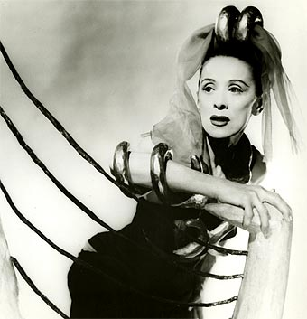
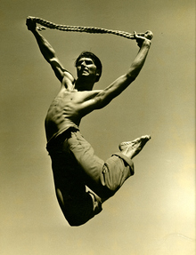
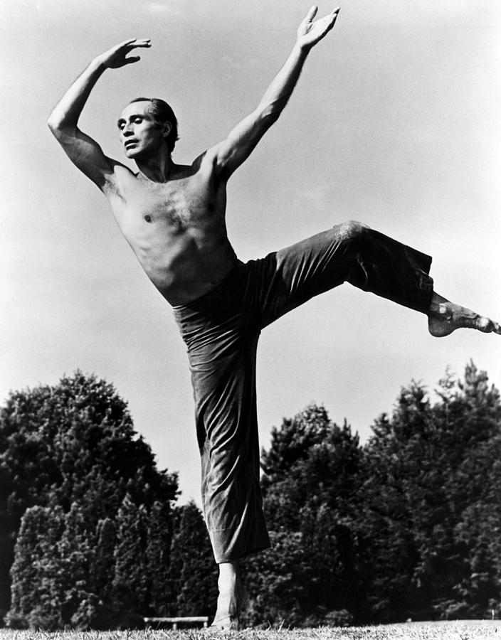

Tecnica Duncan
Isadora Duncan fue una bailarina y coreografa estadounidense. Duncan apoyo los movimientos libres y naturales, se inspiro en las danzas folcloricas,las danzas naturales,la naturaleza,las danzas sociales, las artes griegas, entre otras. Isadora estaba convencida de que no era su cuerpo el que bailaba,sino su esencia,su alma, su interior.

Tecnica Graham
Martha Graham fue una bailarina y coreógrafa estadounidense de danza moderna. La tecnica Graham Está basada en los principios de la contracción y la relajación. Graham se enfoca en liberar las emociones mediante las contracciones pélvicas y abdominales, la relajación al inspirar, los espasmos de los músculos, los estiramientos y tirones.
Tecnica Hawkins
Erick Hawkins fue un bailarín y coreógrafo estadounidense. Bailarín y coreógrafo americano que estudió en Harvard. El principio central de la Técnica Hawkins es el uso de movimientos fluidos y libres que se inician desde el centro de gravedad del cuerpo. La técnica se enfoca en generar movimientos que sigan los principios anatómicos de la postura y la alineación corporal.
Tecnica Limon
José Arcadio Limón, fue un bailarín, maestro de danza y coreógrafo mexicano-estadounidense. Es considerado el precursor de la danza moderna. Se caracteriza por la concordancia entre bailarín y música y su expresión dramática. Esta escuela de baile contemporáneo se caracteriza por jugar más con la gravedad. La caída y la recuperación son la base de la técnica Limón.
